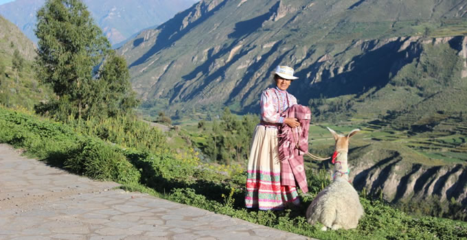
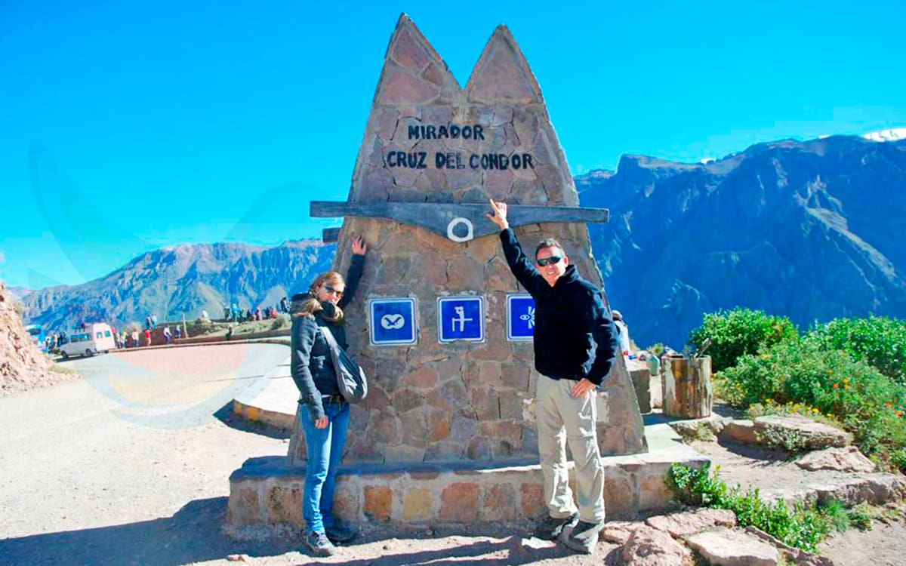
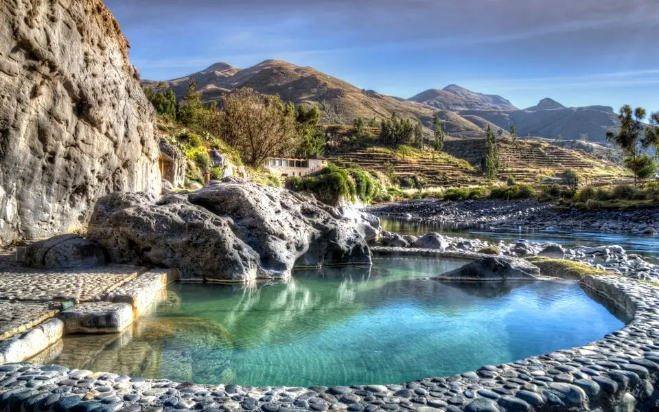
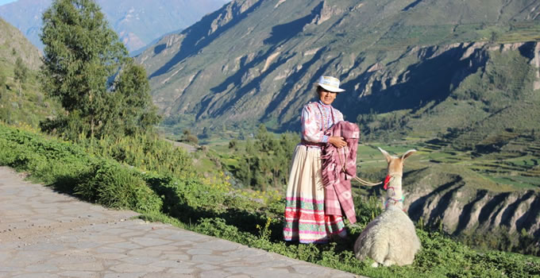
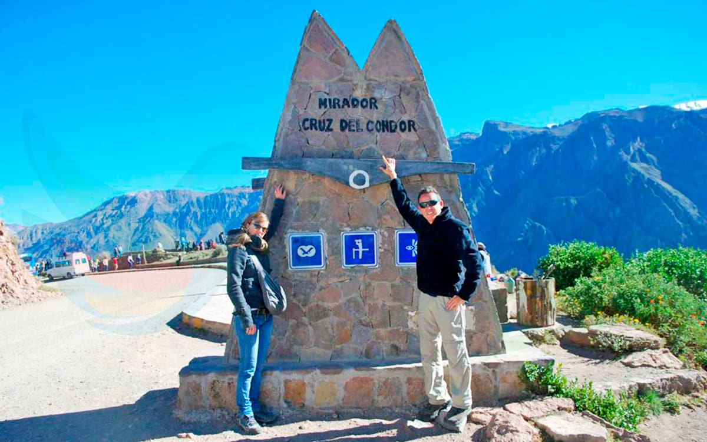
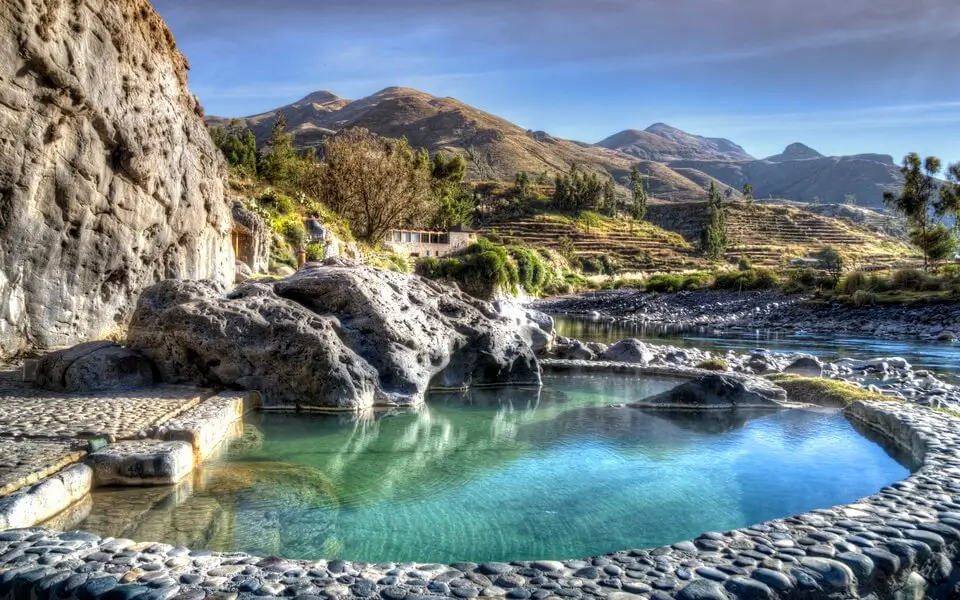

Cañón de Colca: Maravilla natural en el sur del Perú
El Cañón de Colca es uno de los cañones más profundos del mundo, ubicado en la región de Arequipa, Perú. Con una profundidad de más de 3,000 metros, ofrece paisajes espectaculares, miradores impresionantes y la posibilidad de avistar al majestuoso cóndor andino.
Historia
Desde tiempos preincaicos, el valle del Colca ha sido habitado por las culturas Collagua y Cabana, quienes construyeron andenes agrícolas que aún se utilizan hoy en día. Durante la colonia, los españoles dejaron su huella con la construcción de iglesias y caminos. Actualmente, el cañón es un importante destino turístico y cultural.
 





Horarios y Ubicación
- Ubicación: Provincia de Caylloma, Arequipa, Perú.
- Horarios de visita: Acceso libre durante todo el día.
- Costo de entrada: Aproximadamente S/ 70 para turistas extranjeros y S/ 20 para peruanos.
Consejos para Visitantes
- Visita temprano en la mañana: Es el mejor momento para ver el vuelo del cóndor andino.
- Usa ropa abrigadora y cómoda: Las temperaturas pueden variar considerablemente.
- Hidrátate y lleva snacks: Es un área remota con pocos puntos de venta.
- Respeta la naturaleza: No dejes basura y sigue las rutas establecidas.
- Disfruta los baños termales: En Chivay y otros pueblos cercanos encontrarás aguas termales relajantes.